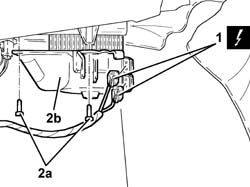
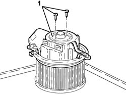

5040C30 fan motor - r+r
- Path
- Procedures > 50 AUXILIARY UNITS > 5040 AIR CONDITIONING CASING AND COMPONENTS > 5040C air conditioner box and components > 5040C30 fan motor - r+r
- Kind
- repair procedure (removal / refitting; the operation number is the code)
- Applies to
- all engines; all production periods
- Interactive page
- https://sloeber94.github.io/elrnDB-fDbl/en/#/2584838
Applies to: all engines; all production periods
 Removing
Removing
 Refitting
Refitting1. Working in the passenger compartment, in the area under the dashboard on the passenger side, disconnect the air conditioner fan electrical connections.
 | Name | Connector |
|---|---|---|
1 | Passenger compartment ventilation fan |
2. Undo the bolts (2a) and remove the air conditioning fan (2b).

Applies to: all engines; all production periods
1. Working at the bench, undo the bolts and take off the fan.

Applies to: all engines; all production periods
Refitting
RemovingWorking at the bench, fit the fan together and secure it using the bolts.
Place the fan back in its housing and secure it using the bolts.
Connect the electrical connection.
| Name | Connector |
|---|---|---|
- | Passenger compartment ventilation fan |